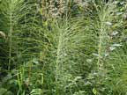
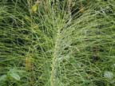

Horse tail
Equisetum arvense
Other names
Mare's tail
Description
Primitive perennials with tough, creeping roots. Stems die down every year. Cone like fruiting bodies are on separate stems (30cm) to the “leaves” (50cm).
Similar plants
There is only supposed to be one sp. in NZ, but I have seen a related sp. growing on the Coromandel coast. Several other species. are grown in gardens.
Distribution
Locally common on river banks and lake edges. It has become a problem in some places because it spreads rapidly by its creeping roots and is resistant to most weedkillers.
Toxin
High silicate content can cause mechanical damage; poisoning probably caused by thiaminase.
Species affected
Not reported in NZ; horses cattle and sheep overseas (usually from eating contaminated hay).
Clinical signs acute
Rare.
Clinical signs chronic
Wasting, weakness, incoordination, diarrhoea.
Post mortem signs
No specific findings, but can include jaundice, degenerative changes in brain, liver and kidney, lung congestion, gut inflammation and meningitis.
Diagnosis
History, evidence of ingestion.
Differential diagnosis
Treatment
Large doses of thiamine.
Prognosis
Recovery good if treated, slow if not. Rarely fatal.
Prevention
References
Conner H.E. The Poisonous Plants In New Zealand. 1992. GP Publications Ltd, Wellington
Cooper M R, Johnson A W. Poisonous Plants and Fungi in Britan: Animals and Human Poisoning. Her Majesty’s Stationary Office. London. 1998
|  plant |
|
|
|
 |
|
|
|
|
||
|
|
|
|